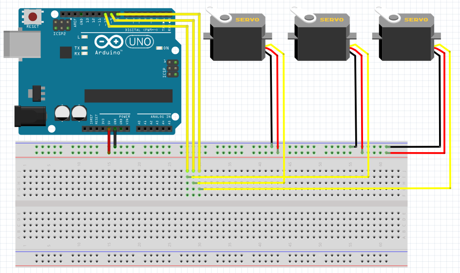

3DOF Robotic arm with inverse kinematics
Alejo Restrepo
2021
This 3DOF Robot Arm applies trigonometric formulas in order to get to a designated point within its range, proving an easier method of robot control.
The following method works for Robots with two degrees of vertical freedom and one degree of horizontal freedom. It takes a given point within the Robot's maximum range,
and then uses trigonometry to calculate angles for both motors.
First, the Robot's maximum range is designated by a circle with a radius of Link 1+Link 2.

|
 (1).jpg)
|
The maximum range is shortened however, if both joints have 180 degree motor. In this case, the maximum range would be a the following area: π(L1+L2)²/2
With an area (B) in the upper semicircle of π L1^2 where it can not reach, and another area (A)
in the lower semicircle of π L1^2 where it can reach.
If L1 >= L2, restrictions apply for another blindspot, a small circle of radius L1-L2, where the robot cannot reach. This circle has the same centerpoint
as the maximum range of the robot.
Given a point D within the non-red area of the circle, a circle with radius L1 is formed with D as its centerpoint. A second circle with radius L2 is formed at the center of the maximum range, and the points where these two circles intersect is calculated. Depending on the rotation of the Robot arm, the right most intersect is selected as input for the algorithm.
"
area = (0.25)*(math.sqrt((d+r0+r1)*(d+r0-r1)*(d-r0+r1)*(-d+r0+r1)))
apoX = ((x0+x1)/(2))+(((x1-x0)*(r0**2-r1**2))/(2*(d**2)))-(2*(y0-y1)/(d**2)*area)
x3 = ((x0 + x1) / (2)) + (((x1 - x0) * (r0 ** 2 - r1 ** 2)) / (2 * (d ** 2))) + (2 * (y0 - y1) / (d ** 2) * area)
y3 = ((y0 + y1) / (2)) + (((y1 - y0) * (r0 ** 2 - r1 ** 2)) / (2 * (d ** 2))) - (2 * (x0 - x1) / (d ** 2) * area)
bpoY = ((y0 + y1) / (2)) + (((y1 - y0) * (r0 ** 2 - r1 ** 2)) / (2 * (d ** 2))) + (2 * (x0 - x1) / (d ** 2) * area)
"
Code for determining the left most intercept. (x0 and y0 are 0. y1 and x1 are the x and y coordinates of D.
After the intersection point is measured, its X and Y coordinates are used in the following equation to determine the angle of Link 1 respective to the ground: an1 = 180 - math.atan(abs(y3) / abs(x3)) * (180 / math.pi) It then determines the angle for the second motor using the coordinates of the D point and the lenghts of both Linkages: an2 = math.acos((math.pow(r1, 2) + math.pow(r0, 2) - math.pow(d, 2)) / (2 * r0 * r1)) * (180 / math.pi)
The final step is to calculate what angle a full-rotation motor would need to rotate to be parallel to the ground: an3 = an1 + math.acos((math.pow(d, 2) + math.pow(r0, 2) - math.pow(r1, 2)) / (2 * r0 * d)) * (180 / math.pi) + math.acos((pow(r1, 2) + math.pow(d, 2) - math.pow(r0, 2)) / (2 * r1 * d)) * (180 / math.pi).
The code detects in what Quadrant point D is and adjusts the equations respectively.
The value of the angles is transmitted real time to the arduino via its serial port.
This communication has a delay of 10ms per instruction. The arduino recieves this
information and uses its write function to move the connected servo motors to the
instructed angles. Because the three sevos have a high torque, an extra power source
is needed in some cases. This powersource, which can be several AA bateries with a
combined voltage of 6V, is connected to the ground pin of the arduino. The following is
a graphic of the pin connections to the microcontroller. The Python code needs to be in
sync with the port the Arduino is connected on,in this case it is connected port "/dev/ttyACM0".

Arduino pin connection graphic.
"#include
Servo servo0;
Servo servo1;
Servo servo2;
// create array
int incoming[2];
void setup(){
Serial.begin(9600);
servo0.attach(5);
servo1.attach(3);
servo2.attach(6);
}
void loop(){
while(Serial.available() >= 3){
// fill array
for (int i = 0; i < 3; i++){
incoming[i] = Serial.read();
}
if (incoming[0] != 255 and incoming[1] != 255 and incoming[2] != 255){
servo0.write(incoming[0]);
servo1.write(incoming[1]);
servo2.write(incoming[2]);
}
else
servo0.write(servo0.read());
servo1.write(servo1.read());
servo2.write(servo2.read());
}
}
"